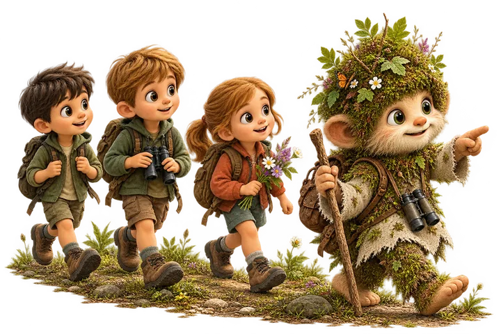

1. stupeň ZŠ
Domovy Bílých Karpat
Pět přírodních domovů, jejich obyvatelé a příběhy, které dětem přiblíží život v Bílých Karpatech.
Pracovní listy, digitální balíčky a programy, se kterými můžete učit o přírodě Bílých Karpat ve třídě i venku. Pro 1. i 2. stupeň ZŠ a zdarma.

Výukové materiály zdarma pro školy a pedagogy. Vydejte se s dětmi poznávat pestrou přírodu Bílých Karpat! Prostřednictvím obrázků, příběhů, badatelských úkolů a her budou děti objevovat její zajímavé obyvatele, přírodní prostředí i souvislosti, které utvářejí zdejší krajinu.
Zvolte pracovní listy podle věku žáků a tématu, které vás zajímá.
Stáhněte si pracovní listy zdarma. Můžete využít celou sadu nebo jen vybraná témata.
Pozorujte, hledejte, přemýšlejte a řešte úkoly. Pracujte samostatně, ve skupinách nebo společně s učitelem.
Využijte doprovodné příběhy, zvukové nahrávky, hry a další aktivity. Potřebné texty najdete také v metodické příručce.
Listy si stáhnete jednou a pak s nimi pracujete offline, ve třídě i v terénu bez Wi-Fi a mobilních dat. Nahrávky a hry přes QR kódy jsou bonus navíc, a když je pustit nejde, texty příběhů najdete v metodické příručce.
Pět přírodních domovů, jejich obyvatelé a příběhy, které dětem přiblíží život v Bílých Karpatech.

Šest přírodních záhad, při kterých žáci zkoumají stopy, hledají příčiny a odhalují souvislosti.
Dobrodružná cesta vody přírodou, od deště a pramene až po úpravu a čištění vody.
Vycházka po Veselí nad Moravou za vodou ve městě: jez, ostrov, malá vodní elektrárna, zámek, park a most nad řekou Moravou.
Hotové aktivity do výuky: stačí je otevřít na tabuli, v tabletu nebo vytisknout.
Deset druhů na interaktivních kartách objevitele – od vlka po vstavač vojenský. Ke každé kartě je audioprůvodce v češtině i slovenštině. Karty si můžete vytisknout ve formátu A3.
Karpaty Dabble a Karpaty Pexeso: dvojice žáků hledají stejné obrázky rostlin, zvířat a krajiny. Hra trvá asi pět minut a hodí se na rozehřátí i na konec hodiny.
Dvanáct výzev o přírodě CHKO Bílé Karpaty. Žáci ho zvládnou sami v počítačové učebně nebo společně na tabuli.
Výuka venku a programy, které za vámi přijedou.
Trasy v terénu se zastaveními a úkoly přes QR kód. Třída je projde sama s učitelem, bez průvodce a bez rezervace. Ke každé trase je PDF na přípravu výletu.
Program s interaktivními stanovišti, který přivezeme i s vybavením:
Konkrétní kroky z česko-slovenské strategie: výuka venku, školní pozorování, setkání s pamětníky a pravidla v terénu.
Napište nám, co učíte a kdy, a domluvíme termín i program.